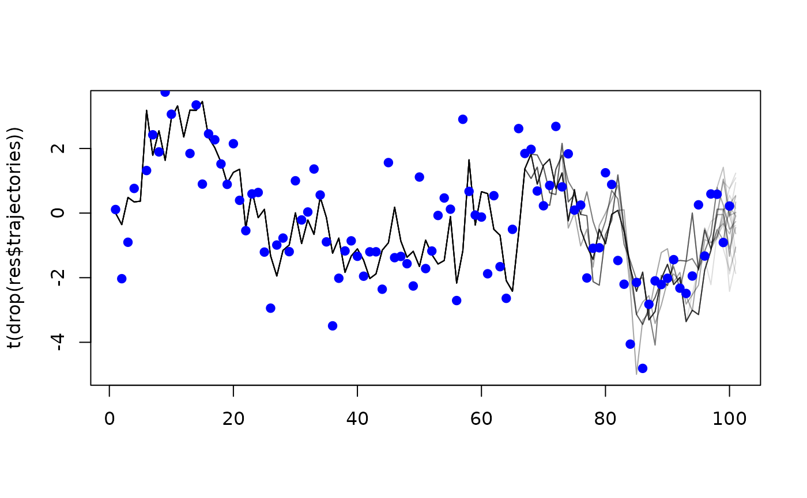

One of our aims with dust was to enable the creation of
fast particle filters. Most of the high level interface for this is
within the package mcstate.
Typically, when using a dust model with
mcstate, you would define a function in R which compares
the model state at some point in time to some data, returning a
likelihood.
It is possible to implement this comparison directly in the dust
model, which may slightly speed up the particle filter (because the
compare function will be evaluated in parallel, and because of slightly
reduced data copying), but also allows running the particle filter on a
GPU (see vignette("gpu")).
This vignette outlines the steps in implementing the comparison directly as part of the model. This is not required for basic use of dust models, and we would typically recommend this only after your model has stabilised and you are looking to extract potential additional speed-ups or accelerate the model on a GPU.
We start with a simple example, a model of volatility
volatility <- dust::dust_example("volatility")To demonstrate the approach, we simulate some data from the model itself:
data <- local({
mod <- volatility$new(list(alpha = 0.91, sigma = 1), 0, 1L, seed = 1L)
mod$update_state(state = matrix(rnorm(1L, 0, 1L), 1))
times <- seq(0, 100, by = 1)
res <- mod$simulate(times)
observed <- res[1, 1, -1] + rnorm(length(times) - 1, 0, 1)
data.frame(time = times[-1], observed = observed)
})
head(data)
#> time observed
#> 1 1 0.1103782
#> 2 2 -2.0313512
#> 3 3 -0.9031784
#> 4 4 0.7630234
#> 5 5 4.4891023
#> 6 6 1.3174224
plot(observed ~ time, data, type = "o", pch = 19, las = 1)As in the mcstate
vignette we need some way of comparing model output to data. The
likelihood function used there is:
volatility_compare <- function(state, observed, pars) {
dnorm(observed$observed, pars$gamma * drop(state), pars$tau, log = TRUE)
}i.e., the probability is normally distributed with mean of the equal
to gamma multiplied by the modelled value, standard
deviation of tau and evaluated at the observed value. Our
aim here is to adapt this so that it is implemented as part of the C++
model. This requires:
class volatility {
public:
using real_type = double;
using internal_type = dust::no_internal;
using rng_state_type = dust::random::generator<real_type>;
struct data_type {
real_type observed;
};
struct shared_type {
real_type alpha;
real_type sigma;
real_type gamma;
real_type tau;
real_type x0;
};
volatility(const dust::pars_type<volatility>& pars) : shared(pars.shared) {
}
size_t size() const {
return 1;
}
std::vector<real_type> initial(size_t time, rng_state_type& rng_state) {
std::vector<real_type> state(1);
state[0] = shared->x0;
return state;
}
void update(size_t time, const real_type * state,
rng_state_type& rng_state, real_type * state_next) {
const real_type x = state[0];
state_next[0] = shared->alpha * x +
shared->sigma * dust::random::normal<real_type>(rng_state, 0, 1);
}
real_type compare_data(const real_type * state, const data_type& data,
rng_state_type& rng_state) {
return dust::density::normal(data.observed, shared->gamma * state[0],
shared->tau, true);
}
private:
dust::shared_ptr<volatility> shared;
};
// Helper function for accepting values with defaults
inline double with_default(double default_value, cpp11::sexp value) {
return value == R_NilValue ? default_value : cpp11::as_cpp<double>(value);
}
namespace dust {
template <>
dust::pars_type<volatility> dust_pars<volatility>(cpp11::list pars) {
using real_type = volatility::real_type;
real_type x0 = 0;
real_type alpha = with_default(0.91, pars["alpha"]);
real_type sigma = with_default(1, pars["sigma"]);
real_type gamma = with_default(1, pars["gamma"]);
real_type tau = with_default(1, pars["tau"]);
volatility::shared_type shared{alpha, sigma, gamma, tau, x0};
return dust::pars_type<volatility>(shared);
}
template <>
volatility::data_type dust_data<volatility>(cpp11::list data) {
return volatility::data_type{cpp11::as_cpp<double>(data["observed"])};
}
}The first part, the data definition, is the definition
which replaces the usual
This structure can contain whatever you want, including things like a
std::vector of values. In our use we’ve typically only had
real_type and int though, even for complex
models.
The comparison is implemented by the method
compare_data, which has a standard signature for the
function which takes the current state, the data at the current time
point, and the RNG state:
real_type compare_data(const real_type * state, const data_type& data,
rng_state_type& rng_state) {
return dust::density::normal(data.observed, shared->gamma * state[0],
shared->tau, true);
}This looks very much like the R version above:
dnorm is replaced with the dust function
dust::density::normal (do not use R API functions here, as
this will be evaluated in a multi-threaded context)Finally, the data marshalling is done by the dust_data
template, within the dust namespace
namespace dust {
template <>
volatility::data_type dust_data<volatility>(cpp11::list data) {
return volatility::data_type{cpp11::as_cpp<double>(data["observed"])};
}
}Here, you can use any function you could use from cpp11,
much like within the dust_pars template specialisation. The
input will be a list, corresponding to the data at a single time
point. The data.frame above will first be processed with
dust::dust_data, so the first few entries look like:
head(dust::dust_data(data), 3)
#> [[1]]
#> [[1]][[1]]
#> [1] 1
#>
#> [[1]][[2]]
#> [[1]][[2]]$time
#> [1] 1
#>
#> [[1]][[2]]$observed
#> [1] 0.1103782
#>
#>
#>
#> [[2]]
#> [[2]][[1]]
#> [1] 2
#>
#> [[2]][[2]]
#> [[2]][[2]]$time
#> [1] 2
#>
#> [[2]][[2]]$observed
#> [1] -2.031351
#>
#>
#>
#> [[3]]
#> [[3]][[1]]
#> [1] 3
#>
#> [[3]][[2]]
#> [[3]][[2]]$time
#> [1] 3
#>
#> [[3]][[2]]$observed
#> [1] -0.9031784This is definitely a bit fiddly! If using odin.dust,
then this would be somewhat simplified as you could provide a single C++
file containing something like
// [[odin.dust::compare_data(observed = real_type)]]
// [[odin.dust::compare_function]]
template <typename T>
typename T::real_type compare(const typename T::real_type * state,
const typename T::data_type& data,
const typename T::internal_type internal,
std::shared_ptr<const typename T::shared_type> shared,
typename T::rng_state_type& rng_state) {
return dust::density::normal(data.observed, odin(gamma) * odin(value),
odin(tau), true);
}and the correct code would be generated (the annotations above the
function are special to odin.dust and help it build the
interface, along with the odin() calls to locate quantities
within the data structure).
For other examples, see the contents of the files
system.file("examples/sir.cpp", package = "dust") and
system.file("examples/sirs.cpp", package = "dust"), which
are the basis of the sir and sirs models in
dust::dust_example.
Once set up, the compare function can be used. First, create the model
mod <- volatility$new(list(alpha = 0.91, sigma = 1), 0, 30L)We can confirm that we can use this model to compare with data:
mod$has_compare()
#> [1] TRUENext, set data into the object:
mod$set_data(dust::dust_data(data))
#> NULLThen, run to any point in the data set:
y <- mod$run(1)We can now compute the likelihood at this point:
mod$compare_data()
#> [1] -1.7749541 -1.0345513 -1.8936705 -1.1474220 -0.9295386 -0.9783803
#> [7] -1.3348719 -0.9223977 -1.1359769 -0.9355476 -0.9313514 -0.9336573
#> [13] -0.9377093 -1.3693498 -1.8998954 -1.4925025 -1.0278387 -1.2607003
#> [19] -0.9346780 -1.0735853 -1.9865724 -1.0765077 -1.4273688 -0.9538040
#> [25] -0.9281353 -2.8361503 -1.1681388 -1.4124899 -1.1200041 -1.0057302This will line up with the R version:
volatility_compare(y, data[1, ], list(tau = 1, gamma = 1))
#> [1] -1.7749541 -1.0345513 -1.8936705 -1.1474220 -0.9295386 -0.9783803
#> [7] -1.3348719 -0.9223977 -1.1359769 -0.9355476 -0.9313514 -0.9336573
#> [13] -0.9377093 -1.3693498 -1.8998954 -1.4925025 -1.0278387 -1.2607003
#> [19] -0.9346780 -1.0735853 -1.9865724 -1.0765077 -1.4273688 -0.9538040
#> [25] -0.9281353 -2.8361503 -1.1681388 -1.4124899 -1.1200041 -1.0057302You can also run a basic bootstrap particle filter using this approach:
mod$update_state(pars = list(alpha = 0.91, sigma = 1), time = 0)
res <- mod$filter(save_trajectories = TRUE)This gives an overall likelihood:
res$log_likelihood
#> [1] -183.4612and, as we provided save_trajectories = TRUE, filtered
trajectories during the simulation:
matplot(t(drop(res$trajectories)), type = "l", lty = 1, col = "#00000022")
points(observed ~ time, data, type = "p", pch = 19, col = "blue")
Typically, you would use the much higher level interface in
mcstate for this, though.
Some additional work is required if you want to run the comparison on
a GPU, see vignette("gpu") for more details.
In the real-world, you will have missing data. If this is possible
then the data type for your input data must be
real_type (and not int, even if it is a
count), because you will want to use std::isnan() against
the data and this is only possibly true for floating point
types.
We expect that the likelihood will be a sum over components per data stream. As such, in the case of missing input data, your likelihood for that component should be exactly zero. This way if no data streams are present all particles will return a likelihood of exactly zero. In the case where this happens, the particle filter will not reorder particles.